USB Virtual Boy Controller
Here's a how-to for creating a USB VB controller using the kit from www.retrousb.com. This is a really cool and cheap way to use a real VB controller for development and emulation (the keyboard just doesn't work well for the VB controller). This is a great alternative to making a parallel port connection w/ SNESKey.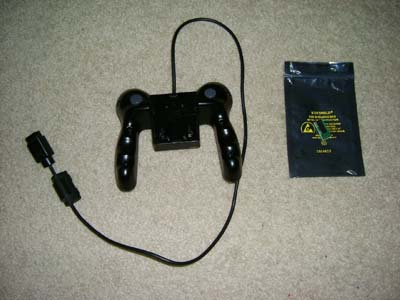
Here's everything you need... controller and interface board.
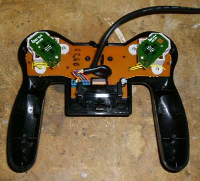
Then you need to take the back off... just a few phillips screws.
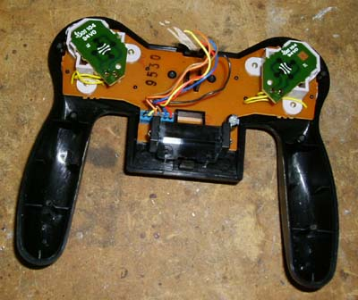
Then you'll want to cut the cable and remove the sheathing, but don't
cut it too short yet.
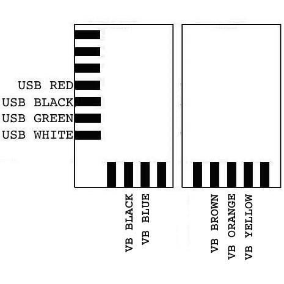
Here's a diagram of where to connect the wires.
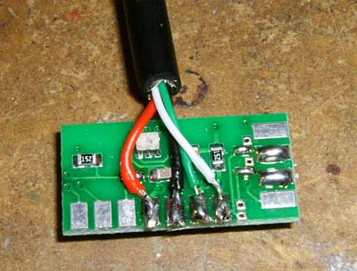
Here's the USB wires connected to the interface board.
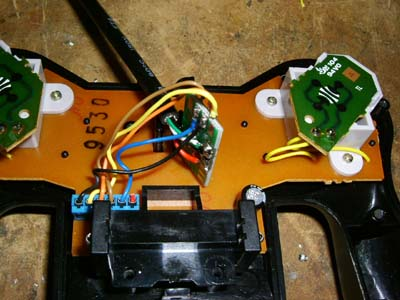
Here is the board wired to both the USB cable and the VB controller
cables. Notice the red wire (from the battery) is not needed, so it can
be cut short.
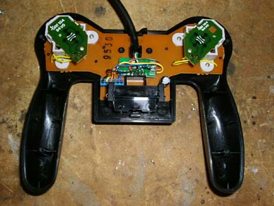
Here is the interface board installed in the controller. Putting the
cable between the original cable clip seems to work well and holds it
securely.
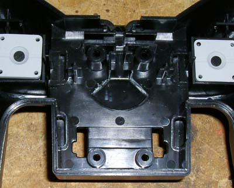
Next, because there is now a new board in the controller, we need to
make some room. You'll want to snap off the angled plastic pieces on
the back of the controller. I used a pair of needlenose pliers, but you
can use anything that will either cut or break them off.
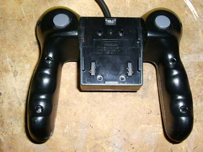
Make sure the back will go on and replace the screws that you removed
earlier.
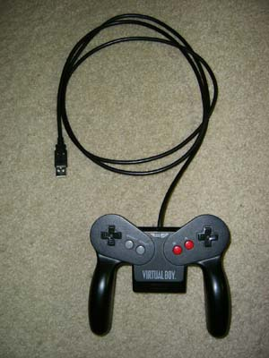
And here's the final product :-).
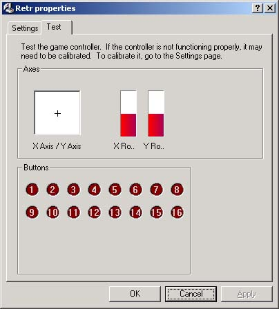
When you plug it in, it'll be detected as a joystick. Go into the
joystick test and ensure everything works properly.
Now... it's great that it's detected as a joystick, too bad the VB emulators don't currently support joysticks. So, to convert the joystick inputs to keyboard inputs, I use JoyToKey. You can download the software HERE.
{kind=link}